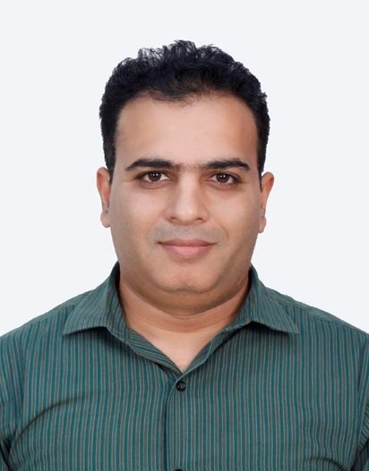

This is my Professional Biography
Salman is a dedicated and result oriented professional, having more than a decade experience in Computer Programming. He has earned his professional degree in Computer Programming from Karachi.
Working in Temenos T24 Core Banking Development / Application Consultant mainly in Integration and Interfacing, Core Banking Implementation, Development, Migration and Live / Post Live Support.
Experience working with Alternate Delivery Channels, Digital Banking Product Integrations.
Extensive business domain knowledge, User correspondence, Deployment Management, with diverse business environments that demand strong organizational, technical and interpersonal skills. Possess strong communication skills, an ability to interact with cross-functional departments, with the high degree of professionalism, discretion and problem resolution capabilities. Quick learner, Self-motivated, Result oriented person, with proven record of growth and achievement.